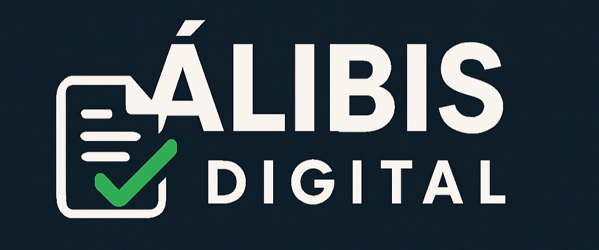

Criar Álibi
Scanner com IA
Avaliação Emocional
Suporte
Criar Álibi
Scanner com IA
Avaliação Emocional
Suporte
Desculpas Impecáveis. Diagnóstico Emocional com IA.
Receba álibis personalizados ou descubra como anda sua saúde emocional com tecnologia de ponta.
Criar Álibi
Apoio Emocional